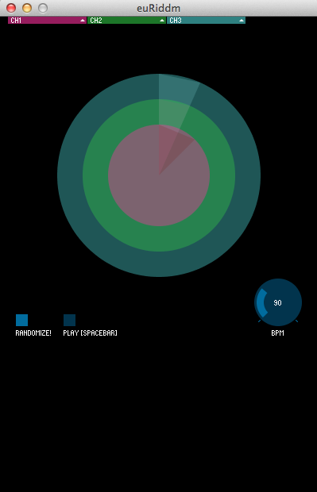

euriddm-processing
Euriddm is a pattern generator and visualizer. It overlays three separate rhythmic patterns.
Each pattern is generated using Euclidean Rhythm (http://en.wikipedia.org/wiki/Euclidean_Rhythm)
Euclidean patterns are very interesting becouse they sound very 'human', and layering three of them with different pattern lengths and accents creates interesting effects, reminding a bit of the compositional approach of Steve Reich, Brian Eno, etc.
The reference for implementing the algorhythm was this excellent paper by Godfried Toussaint: http://cgm.cs.mcgill.ca/~godfried/publications/banff.pdf
I changed the algorhythm slightly to include multiple accent dynamic, so that each measure has one main accent but can also have seconday accents.
screenshots


binaries
Disclaimer: Well, as you might have guessed, this software is provided AS IS, be careful, it might set your house on fire, run away with all your belongings, feed your cat bad catfood.
Sorry about that.
Wanna fixit or make it better? Please send a pull request on github.
future plans
If you'd like to help add new features please contact me on github.
- Javascript version?
- Mobile version
- OSC controller option
- Better sound, sample loading
credits
This code was written in the Processing Environment and uses the following open source libraries:
controlP5: http://www.sojamo.de/libraries/controlP5/
beads project: http://www.beadsproject.net/